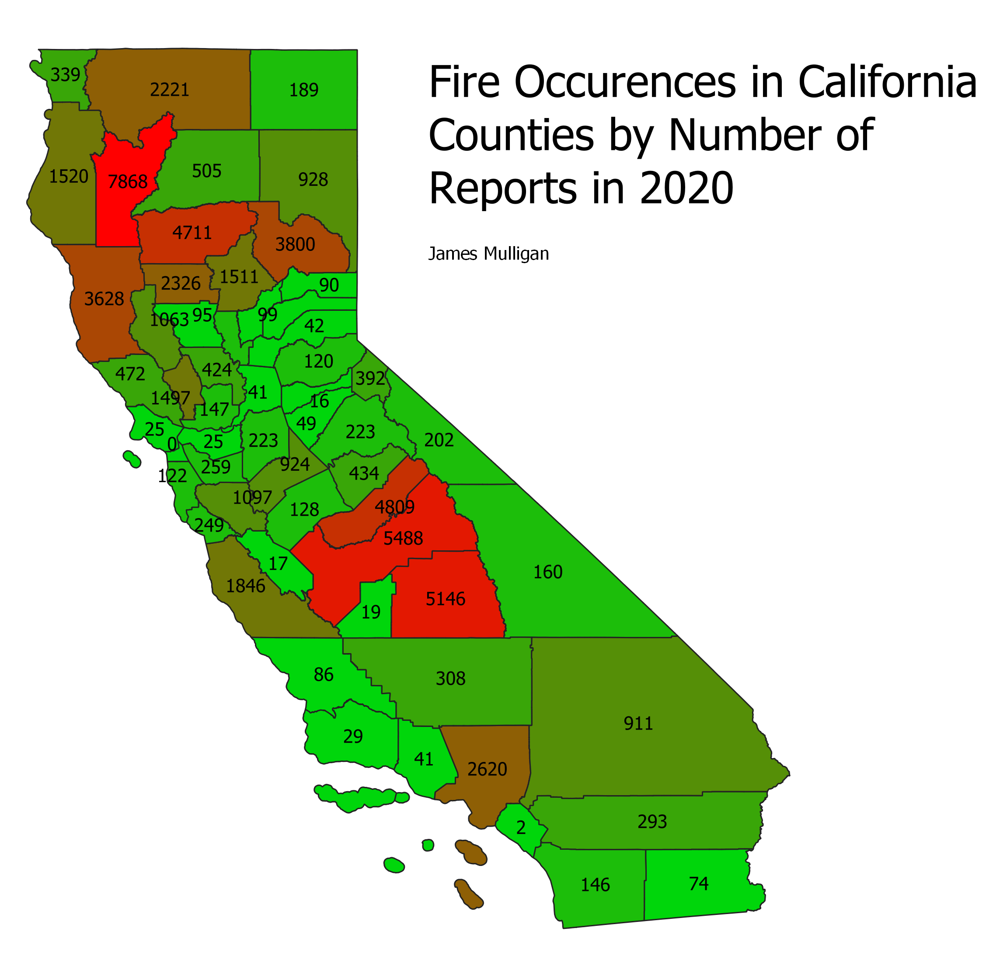

James Mulligan: Homework 10, GeoProcessing

I have focused recently on the fires taking place in California, previously I have looked at the subject using air quality as a metric, this time I used the number of confirmed reports as the metric for fire frequency and severity due to both being correlated with the number of reports from what I have seen. The first operation that I performed was to clip the point layer data which represented the individual points accross the entire US because I was only interested in those occuring in CA. Afterwards, I performed an intersection on the remaining points to see which reports were affiliated with witch counties in order to scale the counties according to the number of reports. I did not think that a scale was particularly useful in this case because the raw number of reports was added for each county making it easy to understand the scale being used.
Starting data used for this project:
Shapefile of California Counties
Shapefile for Fire Reports accross the US (2020)
Original Data Source for Counties Shapefile
Original Data Source for Fire Data Shapefile
Data created during project:
Data after being Clipped
Data after being Intersected